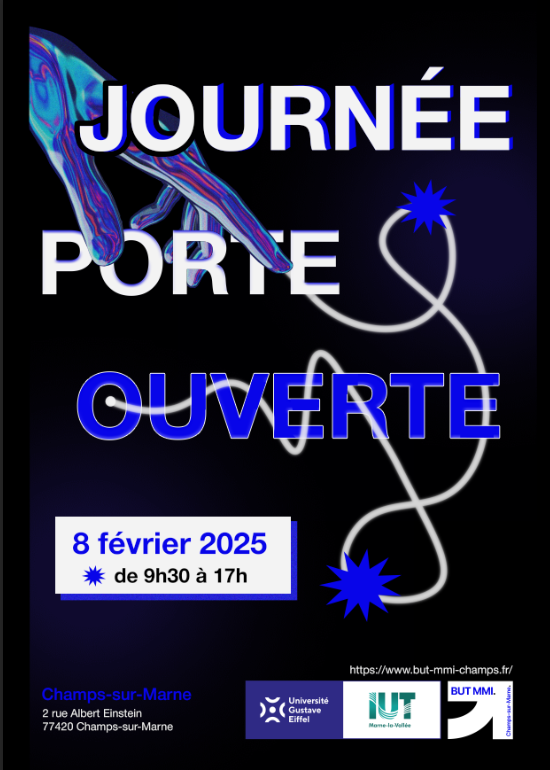
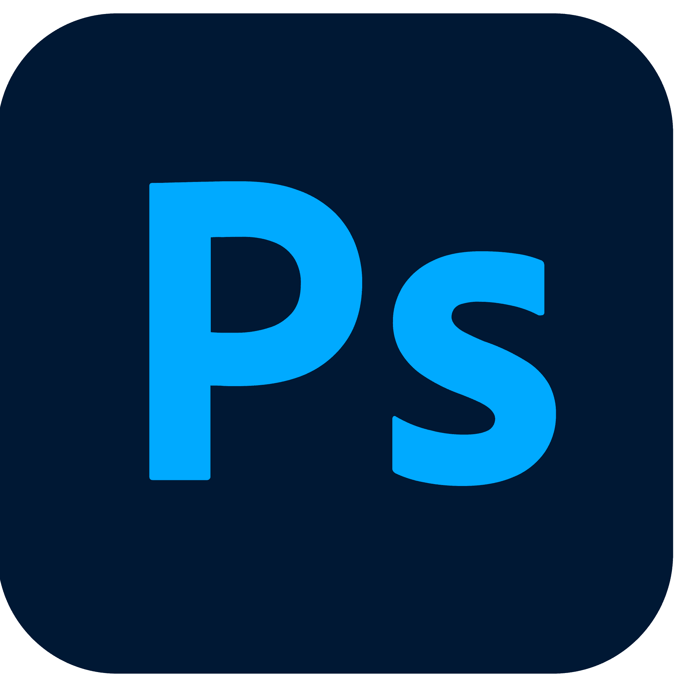
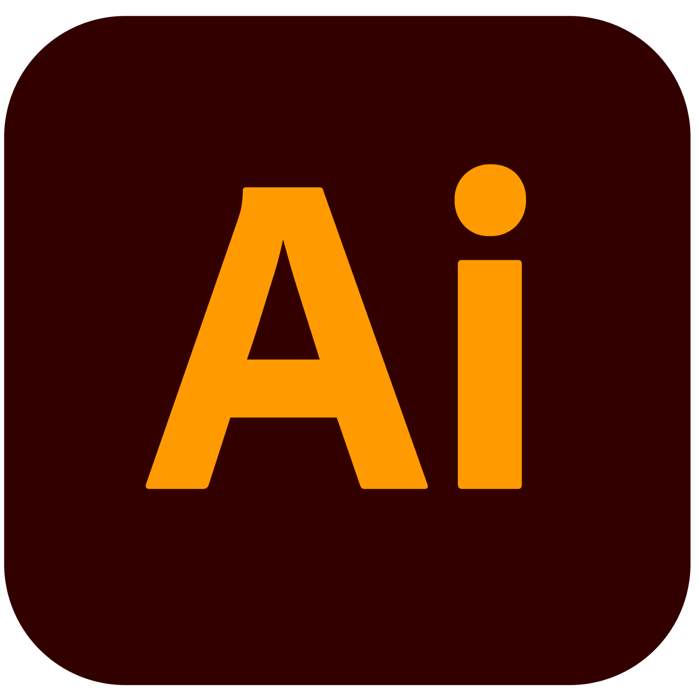

JPO 2024/2025



Ce projet a été réalisé en équipe de 4 créa dans le cadre du semestre 4. Notre mission était de concevoir deux affiches pour les Journées Portes Ouvertes de l’IUT de Paris – Rives de Seine, ainsi qu’une mini-maquette du site associé à l’événement.
L’objectif était double :
Pour démarrer, nous avons construit un moodboard commun et sélectionné une palette de couleurs cohérente, que nous avons déclinée à la fois dans les maquettes et sur les affiches, afin de garantir une direction artistique uniforme.
De mon côté, j’ai principalement travaillé sur l’affiche de prévention des JPO. Ma première version (fond noir) n’a pas été retenue par le groupe, mais cela m’a permis de rebondir et proposer une seconde version, plus convaincante, qui s’intégrait mieux à notre DA commune. Elle a finalement été adoptée pour représenter l’événement.


Ce projet a été une expérience enrichissante, même si j’ai rencontré des difficultés au départ. C’était la première fois que je travaillais avec ce nouveau groupe de créa du S4. Même si nous étions dans la même classe auparavant, je n’avais jamais collaboré avec eux, et j’ai eu un peu de mal à trouver ma place, surtout dans un groupe déjà soudé.
Mais au final, j’ai réussi à m’adapter, à proposer des idées, à écouter les retours et à m’aligner sur les attentes du groupe. Une autre personne du groupe a également réalisé une affiche, ce qui nous a permis d’avoir des propositions variées. De mon côté, j’ai reçu un avis très positif de la part de la professeure, ce qui m’a rendu vraiment fière de mon travail.
Je suis contente de mes deux versions d’affiches, même si une seule a été retenue, car elles reflètent toutes les deux un vrai travail d’adaptation et de réflexion. Ce projet m’a permis de renforcer ma capacité à collaborer, à ajuster mes propositions graphiques et à tenir compte d’une DA collective, ce qui est essentiel dans une logique d’équipe.